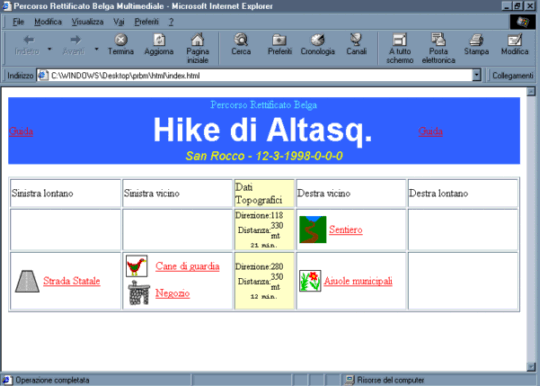
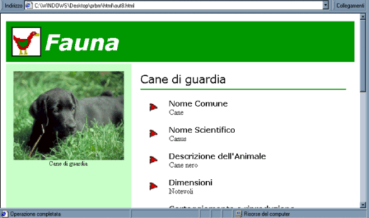
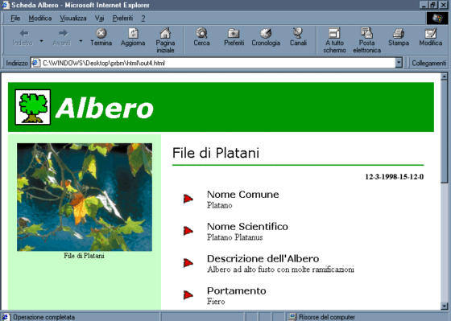

Ecco qui una schermata-tipo della pagina principale del PRBM:

In alto al centro trovate il titolo del Percorso Rettificato Belga, il luogo, la data e l'ora del percorso, gli autori ed eventuali note. Sotto vi trovate di fronte una tabella con al centro i parametri del percorso (Azimut, metri percorsi, minuti impiegati) e nelle colonne laterali i collegamenti ipertestuali ai vari oggetti ed eventi registrati lungo il percorso. Cliccandoci sopra arriverete alla pagina di descizione, "scheda", che corrisponde al collegamento scelto.

Per quanto riguarda la Fauna ad esempio ecco la foto di un cane incontrato lungo la strada (Paco per l'esattezza!) e la descrizione molto approfondita divisa per voci.
Allo stesso modo possiamo interpretare e visualizzare la scheda di un albero:

In pratica il pacchetto si naviga con il browser come fosse un sito Web.
Per tornare alla pagina principale del PRBM clicca "back" o "indietro" sulla barra in alto del tuo browser.